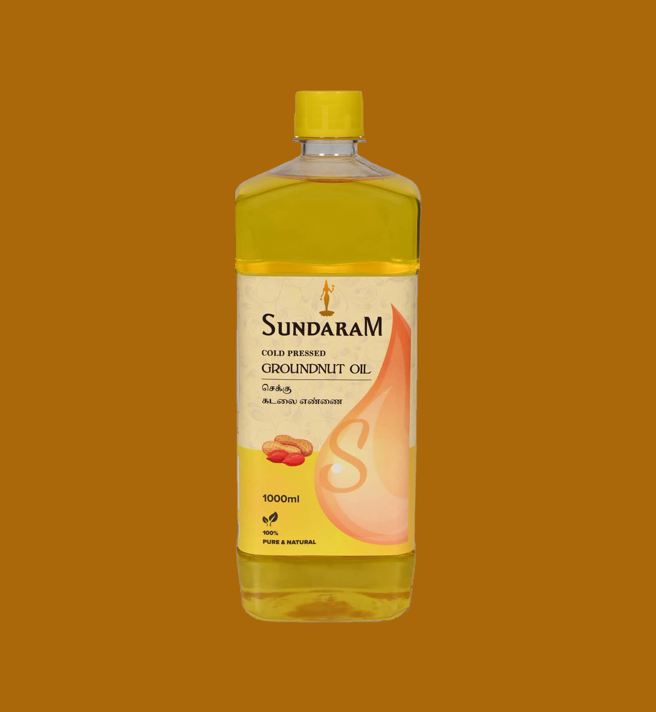

Where the Sri lakshmi narayana oils Legacy Began
Established in 1962 by the Mani shankar family began as a modest village enterprise dedicated to serving its local community. Their unwavering commitment to purity and quality soon elevated the brand, earning widespread trust and admiration.
With rising demand, Sri lakshmi narayana oils evolved beyond its early scale, investing in state-of-the-art facilities designed to elevate our time-honored techniques. This careful balance ensures that every product maintains its authentic purity and nutritional richness.
As our presence expands across the country, our promise remains unchanged: unmatched purity and quality. Every phase of production is guided by our expert team, ensuring that only the finest oils—from raw sourcing to final bottling—carry the Sri lakshmi narayana oils name.
With farmers who share our values, Sri lakshmi narayana oils sources ingredients grown sustainably, naturally, and with true integrity.